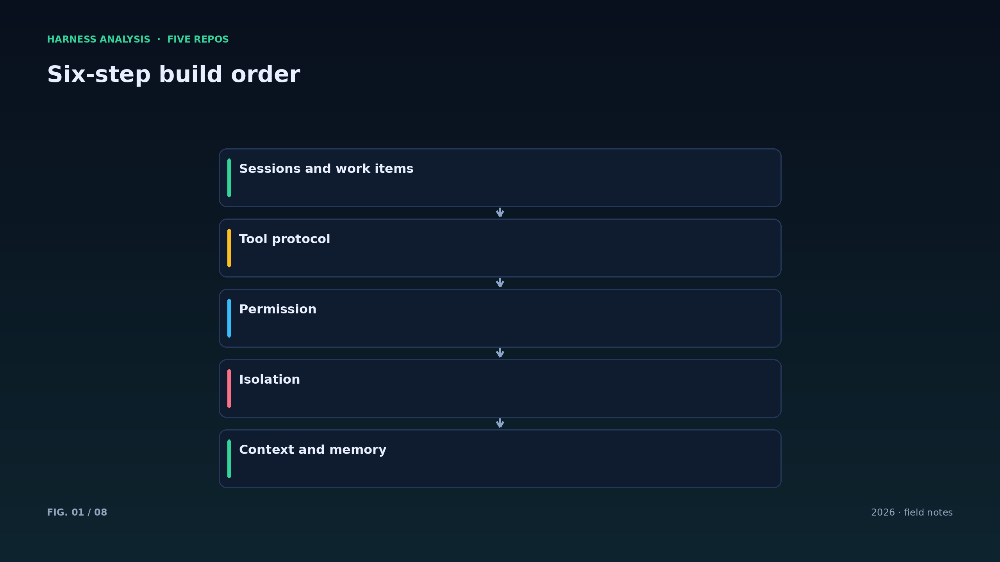
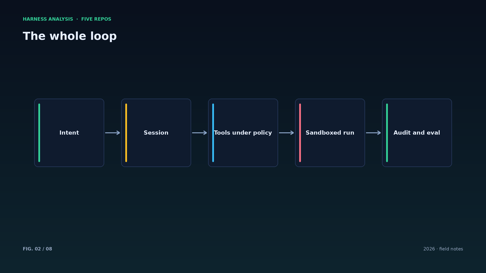
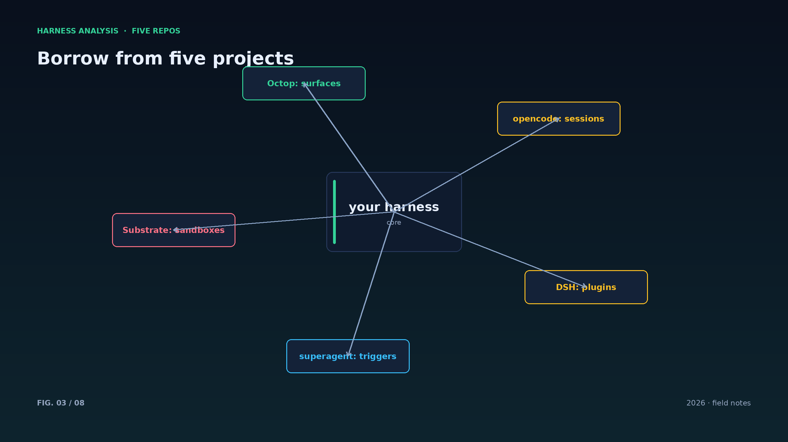
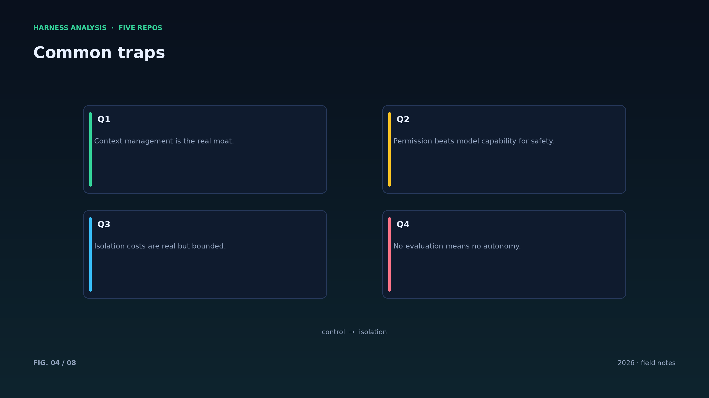
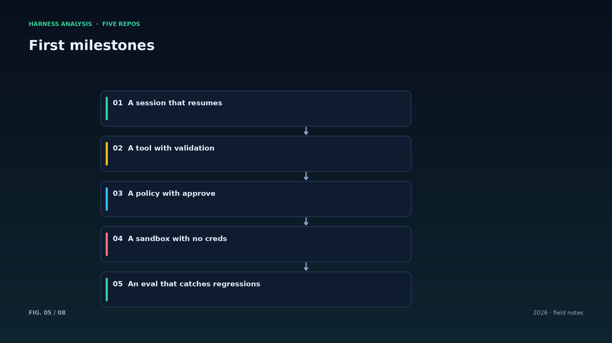
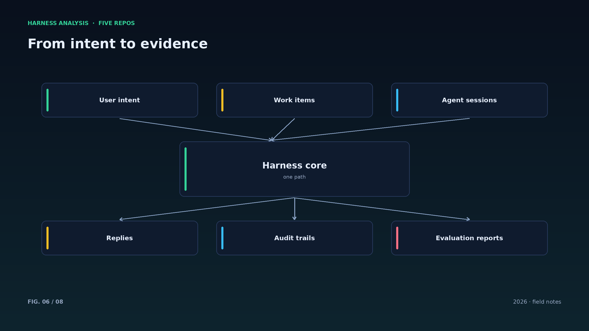
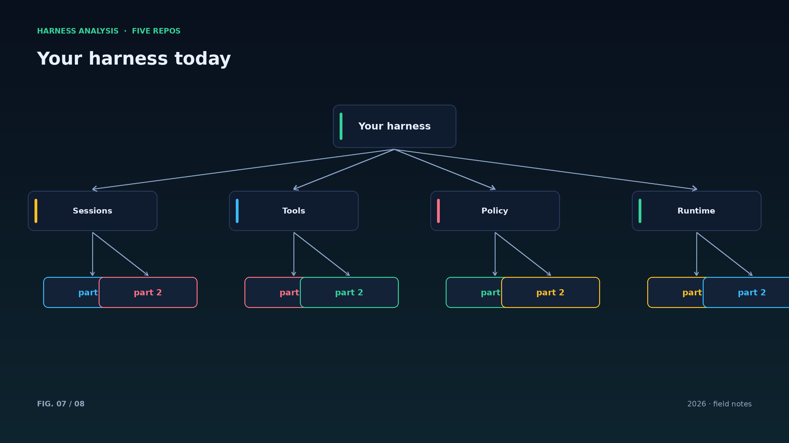
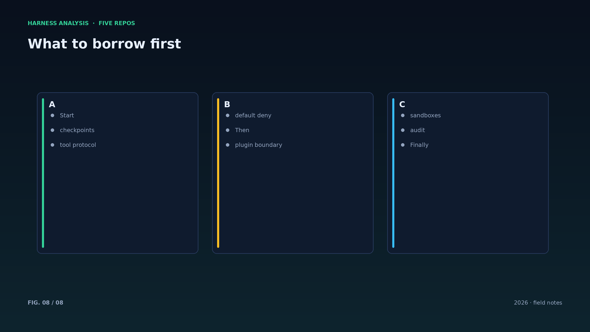

harness analysis · 12
自建 Harness：把五种答案组合成一条路线
Building Your Own Harness: Composing Five Answers into One Path
系列最后一篇把前面的拆解收拢：自建 harness 的六步路线、每步借哪个项目的经验、以及最容易踩的坑。
第一步是会话与工作项：决定“一次任务”的边界，选择工作项模型（借 superagent）或纯会话模型（借 opencode），把检查点写进设计而不是事后补。第二步是工具协议：参数校验、超时、输出截断、结构化结果，一个都不能少。
第三步是权限：默认拒绝、按规则分流、危险操作人工审批，权限检查必须在执行之前。第四步是隔离：从容器开始，凭据放外部，网络默认拒绝；需要密度时再引入快照与池化（借 Substrate）。
第五步是上下文与记忆：预算分配、压缩策略、来源可追溯的召回（借 Octop 的可携带记忆）。第六步是可观测与评测：结构化事件、审计账本、回放与黄金任务，先有评测再谈自主。
组合而不是发明：插件化借 DSH，主动触发借 superagent，隔离与密度借 Substrate，多端与记忆借 Octop，多端会话借 opencode。每一块都有人踩过坑，你要做的是把它们拼成一个适合自己规模的系统。
路线图里最容易拖延的是评测：没有评测，其他模块的改进都无法被证明。先把黄金任务跑起来，再谈更多自主性——这是本系列最想强调的一条。
最后，别把 harness 当成一次性工程：它会长出插件、长出多端、长出沙箱。每一层边界都留好扩展点，比一次性写对更现实。
起步阶段建议用单体：一个进程、一个数据库、一套日志，先证明任务完成率，再谈扩展。
每个季度做一次“边界审计”：哪些模块耦合过深、哪些权限过宽、哪些插件该淘汰，持续修剪比一次设计更重要。
这条路线没有终点：harness 会随模型、工具与团队一起演化。保持可替换的边界，就是保持长期的可维护性。
Architecture figures








ENGLISH
Building Your Own Harness: Composing Five Answers into One Path
The final piece gathers the dissection: a six-step path to building your own harness, which project each step borrows from, and the traps that hurt most.
Step one is sessions and work items: decide what one task is, pick a work-item model (borrow superagent) or a pure session model (borrow opencode), and put checkpoints into the design rather than bolting them on. Step two is the tool protocol: validation, timeouts, output truncation and structured results — none optional.
Step three is permission: default-deny, rule-based routing, human approval for dangerous actions, checked before execution. Step four is isolation: start with containers, keep credentials outside, deny egress by default; add snapshots and pooling (borrow Substrate) only when density demands it.
Step five is context and memory: budgets, compaction, provenance-aware recall (borrow Octop's portable memory). Step six is observability and evaluation: structured events, an audit ledger, replay and golden tasks — get evaluation before autonomy.
Compose, don't reinvent: pluginization from DSH, proactive triggers from superagent, isolation and density from Substrate, surfaces and memory from Octop, multi-surface sessions from opencode. Each piece has been through someone's failures; your job is to assemble them at your scale.
Evaluation is the most postponed item on any roadmap: without it, no improvement can be proven. Get golden tasks running before asking for more autonomy.
Start monolithic: one process, one database, one log stream. Prove task completion first, then talk about scale.
Do a boundary audit every quarter: which modules are too coupled, which permissions too wide, which plugins should retire. Continuous pruning beats one perfect design.